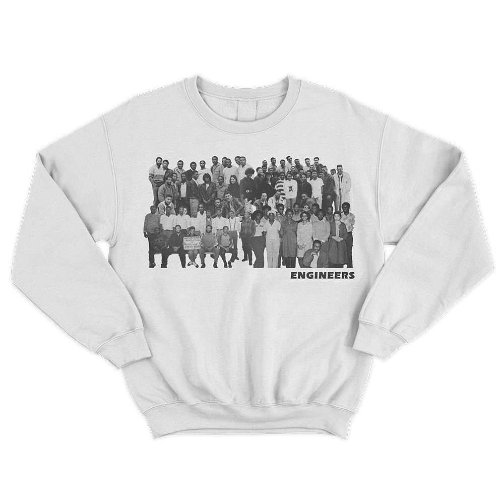

the Polywog Collection
A line of campus apparel, inspired by black and latinx engineering students.
~Images sourced from NYU Poly Archives (1887-2009)~
~Images sourced from NYU Poly Archives (1887-2009)~
the Archive
the Collection
the Process
"the Polywog Collection" is a love letter 4 years in the making.
In the Summer of 2019, I became the ARL/NYU Digital Library Fellow. I was tasked with creating a project centered on digital stewardship and library sciences. At the suggestion of the NYU Bern Dibner Library Head Archivist, Lindsay Anderberg, I began an exploration into the NYU Poly Archives and Special Collections.

Entrance to the NYU Poly Archives and Special Collections
It wasn't long until I saw them, the Polywogs. The "Polywog" was the yearbook publication of the Brooklyn Polytechnic School of Engineering, now NYU Tandon School of Engineering. The yearbook had an impressive run, its first issue was published in 1887 and its final issue, under the NYU Polytecnic School of Engineering name, was published in 2009. I was awestruck by this publication, all the people, art, creativity, engineering and history - tucked away in the Archives.
Black students protesting, one is holding up a sign that says, "Merger Means More Black Students at Poly". From Polywog 1968
I was taken aback by images like the one above, black activism on campus is not often seen at engineering schools. So I resolved myself to look at every single Polywog, identifying images black and latinx students and the groups they formed on campus. I captured all my findings in a handy dandy spreadsheet where I tracked individuals, groups wrote personal notes, and jotted down ideas of how I could transform these materials. I also scanned some images on my phone and threw them up on my Instagram story, to guage if there was any interest in these materials. Thankfully, there was.
Darnley E. Howard Yearbook Picture. From Polywog 1920
After much consultation and ideation, in January 2020 this project became the, "Archives Apparel Project". Originally, I was set to transform images of black and latinx found in the Polywog yearbook into a line of campus apparel. These pieces would be designed with feedback from the NYU Tandon chapters of the National Society of Black Engineers (NSBE) and the Society of Hispanic Professional Engineers (SHPE), as I wanted these pieces to holistically capture the spirit that black and latinx students have bought to NYU Tandon. Ultimately, I wanted to give the apparel and the designs to these clubs, so that they could be used to generate conference funding for students and raise awareness to the awesome historic legacy that black and latinx engineers have at NYU Tandon.

All the Images I scanned from the 115 Polywogs, printed and laid out to be curated.
the Post COVID Pivot.
Just as I had begun looking into printing services for my apparel designs, the COVID-19 global pandemic had me question the very viability of getting limited run apparel printed by May. After, yet again, much consultation, I knew I had to pivot. I couldn't create the apparel rollout that I envisioned and I had no idea how I was going to present my research, let alone my designs, to folks from my bedroom.
Mooooooooooooooooooooooooooooooooodboard - for apparel designs
Thus, this web based, living collection was born. This site serves to showcase the legacy of these students, historic images and the designs born out of them, while also being an invitation into the NYU Poly Archives and Special Collection. I hope that people can recognize the incredible art and history within the archives and that it inspires them to create, remix, transform and share these materials. I hope that black and latinx students at NYU Tandon see this project and know that their legacy in this institution is eternal. They come out of NYU Tandon joining a hallowed group of engineers that have impacted the world through their research, reshaped industries and strengthed their communities.

Engineers
About Me

Hello! My name is Joel Ureña. I'm a graduating senior, studying Intergrated Digital Media with a double minor in Computer Science and Science and Technology Studies, from the NYU Tandon School of Engineering. This project serves as a labor of love to my alma matter, thanks for stopping by! If you'd like to learn more about me and my work, please check out my Github and LinkedIn. Feel free to reach out via email: